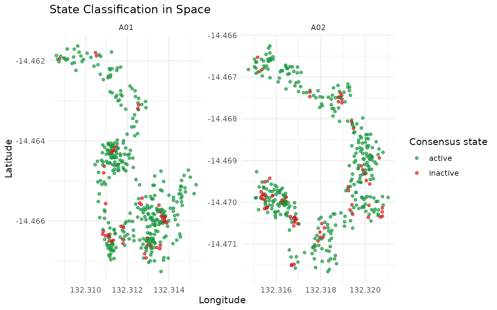
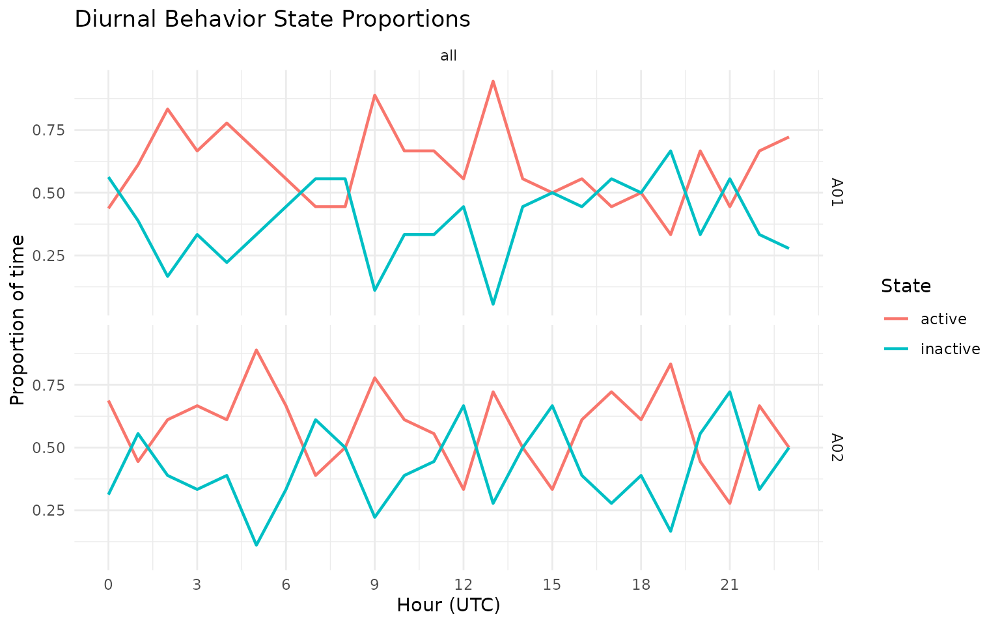
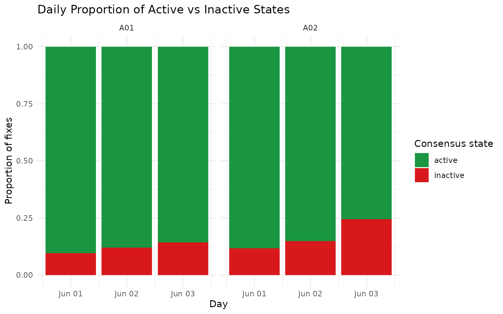
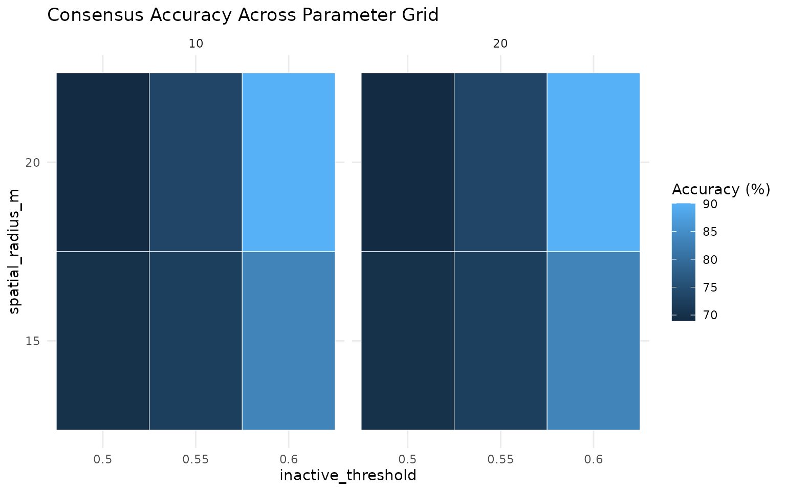
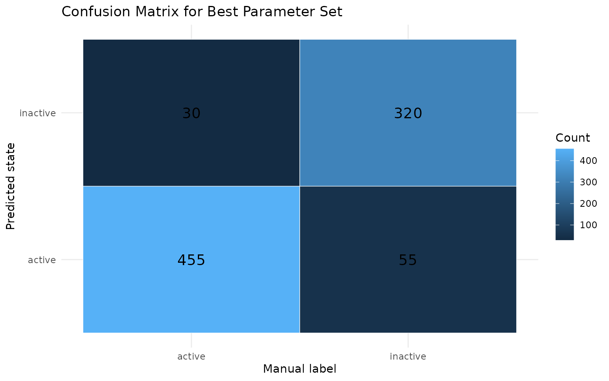

GPS 201: Activity Classification and Validation
Source:vignettes/gps-201-activity-and-validation.Rmd
gps-201-activity-and-validation.RmdOverview
This tutorial covers the next stage after cleaning and metric generation:
- classify each GPS row as
activeorinactive, - manually label rows in an interactive app,
- compare model predictions against labels,
- rank parameter settings by agreement.
Why This Workflow?
State classification is iterative. A clear validation loop gives better decisions:
- You can inspect how model assumptions map to real movement behaviour.
- You can use manual labels as a transparent ground-truth reference.
- You can tune parameters with a reproducible and auditable process.
- You can report uncertainty and model agreement directly.
2) Build a small reproducible example
set.seed(202)
timestamps <- seq(
from = as.POSIXct("2024-06-01 00:00:00", tz = "UTC"),
by = "10 min",
length.out = 3 * 24 * 6
)
animal_info <- tibble(
sensor_id = c("A01", "A02"),
lon0 = c(132.310, 132.316),
lat0 = c(-14.462, -14.467)
)
gps_list <- list()
for (i in seq_len(nrow(animal_info))) {
gps_list[[i]] <- tibble(
sensor_id = animal_info$sensor_id[i],
datetime = timestamps,
lon = animal_info$lon0[i] + cumsum(rnorm(length(timestamps), 0, 0.00020)),
lat = animal_info$lat0[i] + cumsum(rnorm(length(timestamps), 0, 0.00016))
)
}
gps <- bind_rows(gps_list)
gps <- grz_clean(
data = gps,
steps = c("errors", "speed_fixed", "denoise"),
max_speed_mps = 4,
verbose = FALSE
)How this works in practice:
- Start from already cleaned GPS rows with stable identifiers.
- Keep example windows small enough to iterate quickly while tuning.
Common pitfalls and checks:
- Pitfall: tuning on too broad a window early on.
Check: begin with one animal and a short period, then scale up.
3) Run consensus active/inactive classification
grz_classify_activity_consensus() combines HMM and
spatial signals into one final state column.
gps_states <- grz_classify_activity_consensus(
data = gps,
groups = "sensor_id",
verbose = FALSE
)
state_view <- gps_states %>%
as_tibble() %>%
select(sensor_id, datetime, lon, lat, activity_state_consensus)
state_view
#> # A tibble: 802 × 5
#> sensor_id datetime lon lat activity_state_consensus
#> <chr> <dttm> <dbl> <dbl> <chr>
#> 1 A01 2024-06-01 00:00:00 132. -14.5 active
#> 2 A01 2024-06-01 00:10:00 132. -14.5 active
#> 3 A01 2024-06-01 00:20:00 132. -14.5 active
#> 4 A01 2024-06-01 00:30:00 132. -14.5 active
#> 5 A01 2024-06-01 00:40:00 132. -14.5 active
#> 6 A01 2024-06-01 00:50:00 132. -14.5 active
#> 7 A01 2024-06-01 01:00:00 132. -14.5 active
#> 8 A01 2024-06-01 01:10:00 132. -14.5 active
#> 9 A01 2024-06-01 01:20:00 132. -14.5 active
#> 10 A01 2024-06-01 01:30:00 132. -14.5 inactive
#> # ℹ 792 more rows
state_more <- setdiff(names(gps_states), names(state_view))
cat(
"i",
length(state_more),
"more columns:",
paste(head(state_more, 10), collapse = ", "),
if (length(state_more) > 10) ", ..." else "",
"\n"
)
#> i 14 more columns: step_dt_s, step_m, speed_mps, bearing_deg, turn_rad, cum_distance_m, net_displacement_m, activity_state_hmm, activity_state_id_hmm, inactive_prob_hmm , ...Key state variables in this workflow:
-
activity_state_hmm: HMM-basedactive/inactiveestimate. -
inactive_prob_hmm: HMM inactivity probability. -
activity_state_spatial: spatial clustering based estimate. -
activity_state_consensus: final state after combining methods. -
inactive_score_consensus: consensus inactivity score (0 to 1).
How this works in practice:
- HMM uses movement features to estimate latent activity states.
- Spatial classifier identifies local dwell/stay behaviour from position patterns.
- Consensus combines both signals into a final
active/inactivedecision.
Common pitfalls and checks:
- Pitfall: assuming one classifier is always correct.
Check: inspect both component outputs (hmmandspatial) before consensus. - Pitfall: class imbalance leading to misleading accuracy.
Check: inspect class proportions by day and animal.
gps_states %>%
as_tibble() %>%
ggplot(aes(x = lon, y = lat, color = activity_state_consensus)) +
geom_point(alpha = 0.7, size = 1.3) +
facet_wrap(~sensor_id, scales = "free") +
scale_color_manual(values = c(active = "#1a9641", inactive = "#d7191c")) +
labs(
title = "State Classification in Space",
x = "Longitude",
y = "Latitude",
color = "Consensus state"
) +
theme_minimal()
grz_plot_diurnal_states(
data = gps_states,
state_col = "activity_state_consensus",
group_col = "sensor_id",
plot_type = "line"
)
gps_states %>%
as_tibble() %>%
mutate(day = as.Date(datetime)) %>%
group_by(sensor_id, day, activity_state_consensus) %>%
summarise(n = n(), .groups = "drop") %>%
group_by(sensor_id, day) %>%
mutate(prop = n / sum(n)) %>%
ungroup() %>%
ggplot(aes(x = day, y = prop, fill = activity_state_consensus)) +
geom_col(position = "stack") +
facet_wrap(~sensor_id) +
scale_fill_manual(values = c(active = "#1a9641", inactive = "#d7191c")) +
labs(
title = "Daily Proportion of Active vs Inactive States",
x = "Day",
y = "Proportion of fixes",
fill = "Consensus state"
) +
theme_minimal()
4) Add manual labels (interactive app)
Use this in an interactive R session to create or edit a
label column.
gps_states$point_id <- paste(
gps_states$sensor_id,
format(gps_states$datetime, "%Y%m%d%H%M%S", tz = "UTC"),
seq_len(nrow(gps_states)),
sep = "_"
)
labelled <- grz_label_gps_states(
data = gps_states,
lon = "lon",
lat = "lat",
time = "datetime",
id = "point_id",
color_by = "sensor_id",
initial_label_col = "label",
start_day_offset = 0L,
time_window = "week",
n_animals = 1L,
animal_col = "sensor_id"
)If you save that output to CSV, you can reload it later and continue editing:
# data.table::fwrite(labelled, "labelled_states.csv")
# labelled <- data.table::fread("labelled_states.csv")
# labelled$datetime <- as.POSIXct(labelled$datetime, tz = "UTC")How this works in practice:
- Manual labels provide ground truth for calibration and validation.
- Labels should be saved with stable IDs so they can be reused across sessions.
Common pitfalls and checks:
- Pitfall: relabelling the same points without versioning.
Check: keep dated label files or append a reviewer/version column. - Pitfall: using ambiguous behaviour windows.
Check: mark uncertain points asNAinstead of forcing a label.
5) Demonstrate a prediction-vs-label comparison
For a fully reproducible vignette, we create a synthetic
label column by copying predictions and flipping a random
subset of rows.
In your project, replace this with manual labels from
grz_label_gps_states().
labelled <- gps_states
labelled$label <- labelled$activity_state_consensus
set.seed(303)
flip_n <- floor(0.1 * nrow(labelled))
flip_idx <- sample(seq_len(nrow(labelled)), size = flip_n)
labelled$label[flip_idx] <- ifelse(
labelled$label[flip_idx] == "active",
"inactive",
"active"
)
label_view <- labelled %>%
as_tibble() %>%
select(sensor_id, datetime, activity_state_consensus, label, inactive_score_consensus)
label_view
#> # A tibble: 802 × 5
#> sensor_id datetime activity_state_consensus label
#> <chr> <dttm> <chr> <chr>
#> 1 A01 2024-06-01 00:00:00 active active
#> 2 A01 2024-06-01 00:10:00 active active
#> 3 A01 2024-06-01 00:20:00 active active
#> 4 A01 2024-06-01 00:30:00 active active
#> 5 A01 2024-06-01 00:40:00 active inactive
#> 6 A01 2024-06-01 00:50:00 active active
#> 7 A01 2024-06-01 01:00:00 active active
#> 8 A01 2024-06-01 01:10:00 active active
#> 9 A01 2024-06-01 01:20:00 active active
#> 10 A01 2024-06-01 01:30:00 inactive inactive
#> # ℹ 792 more rows
#> # ℹ 1 more variable: inactive_score_consensus <dbl>
label_more <- setdiff(names(labelled), names(label_view))
cat(
"i",
length(label_more),
"more columns:",
paste(head(label_more, 10), collapse = ", "),
if (length(label_more) > 10) ", ..." else "",
"\n"
)
#> i 15 more columns: lon, lat, step_dt_s, step_m, speed_mps, bearing_deg, turn_rad, cum_distance_m, net_displacement_m, activity_state_hmm , ...How this works in practice:
- Truth labels and predicted states are compared on the same rows.
- Only valid binary states (
active,inactive) are included for scoring.
Common pitfalls and checks:
- Pitfall: comparing with stale predictions from different
preprocessing.
Check: regenerate predictions from the same cleaned dataset used for labels. - Pitfall: hidden leakage from copying predicted labels into truth
labels.
Check: keep manually-labelled files separate from model outputs.
6) Tune parameters and rank the top 3 settings
grid <- tidyr::expand_grid(
inactive_threshold = c(0.50, 0.55, 0.60),
spatial_radius_m = c(15, 20),
spatial_min_dwell_mins = c(10, 20)
)
results <- tibble()
for (i in seq_len(nrow(grid))) {
pred <- grz_classify_activity_consensus(
data = labelled,
groups = "sensor_id",
decision_rule = "weighted",
inactive_threshold = grid$inactive_threshold[[i]],
spatial_radius_m = grid$spatial_radius_m[[i]],
spatial_min_dwell_mins = grid$spatial_min_dwell_mins[[i]],
spatial_min_points = 3L,
min_run_n = 2L,
verbose = FALSE
)
comparison <- tibble(
truth = tolower(trimws(as.character(labelled$label))),
pred = tolower(trimws(as.character(pred$activity_state_consensus)))
) %>%
filter(truth %in% c("active", "inactive")) %>%
filter(pred %in% c("active", "inactive"))
n_compared <- nrow(comparison)
accuracy <- if (n_compared == 0L) {
NA_real_
} else {
mean(comparison$truth == comparison$pred)
}
results <- bind_rows(
results,
tibble(
inactive_threshold = grid$inactive_threshold[[i]],
spatial_radius_m = grid$spatial_radius_m[[i]],
spatial_min_dwell_mins = grid$spatial_min_dwell_mins[[i]],
n_compared = n_compared,
accuracy = accuracy
)
)
}
top3 <- results %>%
arrange(desc(accuracy), desc(n_compared)) %>%
slice_head(n = 3) %>%
mutate(accuracy_percent = round(100 * accuracy, 2)) %>%
select(inactive_threshold, spatial_radius_m, spatial_min_dwell_mins, n_compared, accuracy_percent)
top3
#> # A tibble: 3 × 5
#> inactive_threshold spatial_radius_m spatial_min_dwell_mins n_compared
#> <dbl> <dbl> <dbl> <int>
#> 1 0.6 20 10 802
#> 2 0.6 20 20 802
#> 3 0.6 15 10 802
#> # ℹ 1 more variable: accuracy_percent <dbl>How this works in practice:
- A parameter grid is evaluated with a consistent consensus rule.
- Each setting is ranked by observed agreement against manual labels.
- Top settings are candidates for holdout validation, not automatic final choices.
Common pitfalls and checks:
- Pitfall: overfitting thresholds to a single week/animal.
Check: validate top settings on held-out animals and periods. - Pitfall: choosing accuracy only.
Check: also inspect confusion matrix and error type balance.
results %>%
mutate(accuracy_percent = 100 * accuracy) %>%
ggplot(aes(x = factor(inactive_threshold), y = factor(spatial_radius_m), fill = accuracy_percent)) +
geom_tile(color = "white") +
facet_wrap(~spatial_min_dwell_mins) +
labs(
title = "Consensus Accuracy Across Parameter Grid",
x = "inactive_threshold",
y = "spatial_radius_m",
fill = "Accuracy (%)"
) +
theme_minimal()
best <- top3 %>% slice(1)
best_pred <- grz_classify_activity_consensus(
data = labelled,
groups = "sensor_id",
decision_rule = "weighted",
inactive_threshold = best$inactive_threshold[[1]],
spatial_radius_m = best$spatial_radius_m[[1]],
spatial_min_dwell_mins = best$spatial_min_dwell_mins[[1]],
spatial_min_points = 3L,
min_run_n = 2L,
verbose = FALSE
)
confusion_df <- tibble(
truth = tolower(trimws(as.character(labelled$label))),
pred = tolower(trimws(as.character(best_pred$activity_state_consensus)))
) %>%
filter(truth %in% c("active", "inactive")) %>%
filter(pred %in% c("active", "inactive")) %>%
count(truth, pred, .drop = FALSE)
confusion_df %>%
ggplot(aes(x = truth, y = pred, fill = n)) +
geom_tile(color = "white") +
geom_text(aes(label = n), size = 5) +
labs(
title = "Confusion Matrix for Best Parameter Set",
x = "Manual label",
y = "Predicted state",
fill = "Count"
) +
theme_minimal()
7) Optional advanced diagnostics
These helpers are useful once you have enough labelled data:
# Diurnal feature patterns for threshold setting
grz_plot_diurnal_metrics(
data = labelled,
metrics = c("step_m", "turn_rad"),
group_col = "sensor_id"
)
# Behaviour diagnostics (feature summary, transitions, bouts, PCA)
diagnostics <- grz_validate_behavior(
data = labelled,
state_col = "activity_state_consensus",
groups = "sensor_id",
pca = TRUE
)grz_validate_behavior() returns state counts,
transitions, bout summaries, and an optional PCA diagnostic for the
selected state column.
How this works in practice:
- Transition and bout outputs help detect unstable state switching.
- PCA and feature summaries help assess separation between labelled states.
Common pitfalls and checks:
- Pitfall: interpreting PCA clusters as definitive behaviour
classes.
Check: use PCA as support, not as the sole decision criterion.
Recommended Practice
- Label a representative subset (for example, one animal for one week).
- Tune parameters on that subset.
- Validate performance metrics.
- Freeze parameters and run full-cohort processing.
- Re-check performance when deployment conditions change.
References
- Zucchini, W., MacDonald, I. L., & Langrock, R. (2016).
Hidden Markov Models for Time Series: An Introduction Using R (2nd ed.).
Core reference for HMM-based state modelling. - Li, Q., Zheng, Y., Xie, X., Chen, Y., Liu, W., & Ma, W.-Y.
(2008).
Mining user similarity based on location history. ACM SIGSPATIAL GIS.
Includes stay-point style concepts used in spatial inactivity detection.